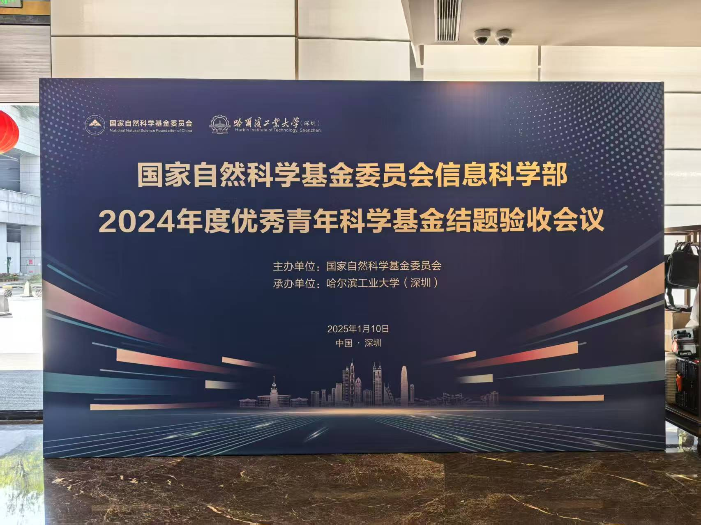

2025年1月10日，国家自然科学基金委员会信息科学部2024年度优秀青年科学基金结题验收会议顺利举行。 本次会议由国家自然科学基金委员会主办，哈尔滨工业大学（深圳）协办，旨在对本年度优秀青年科学基金项目进行全面验收，总结科研成果、交流学术经验，并推动信息科学领域的创新发展。
在本次会议的组织过程中，多媒体智能前沿实验室（M3AIL Research Group）团队承担了策划筹备、会务组织及技术保障等多项重要工作，确保会议的高效运行。俞俊教授作为会议的统筹负责人，与国家自然科学基金委员会保持密切沟通，协调会议各项安排，确保流程规范有序。他带领团队精心策划，优化会议议程，协调各方资源，为会议的成功举办奠定了坚实基础。包俊老师、刘卜瑜老师、黄强老师和张永岗博士深度参与会场布置、设备调试、技术支持等关键环节，确保会议环境舒适、设备运行稳定。他们密切关注会议进程，及时处理技术问题，为参会人员提供优质的会议体验。此外，硕士生朱奕锋、赵德龙、代思君积极投身会议志愿服务，承担签到引导、资料分发、现场协调等工作。他们的细致服务和高度责任感赢得了与会专家学者的认可。
实验室团队的辛勤付出得到了国家自然科学基金委员会及参会人员的高度评价，大家对实验室在会议组织中的专业能力与高效执行力给予了充分肯定。这不仅展示了哈尔滨工业大学（深圳）在信息科学领域的学术实力，也进一步提升了实验室在高水平科研组织与学术交流方面的影响力。 未来，M3AIL 实验室将继续发挥自身优势，积极参与学术活动，助力推动人工智能及多媒体计算等前沿研究的发展，同时不断加强与国内外顶级科研机构的交流合作，为学术界培养更多高水平人才。